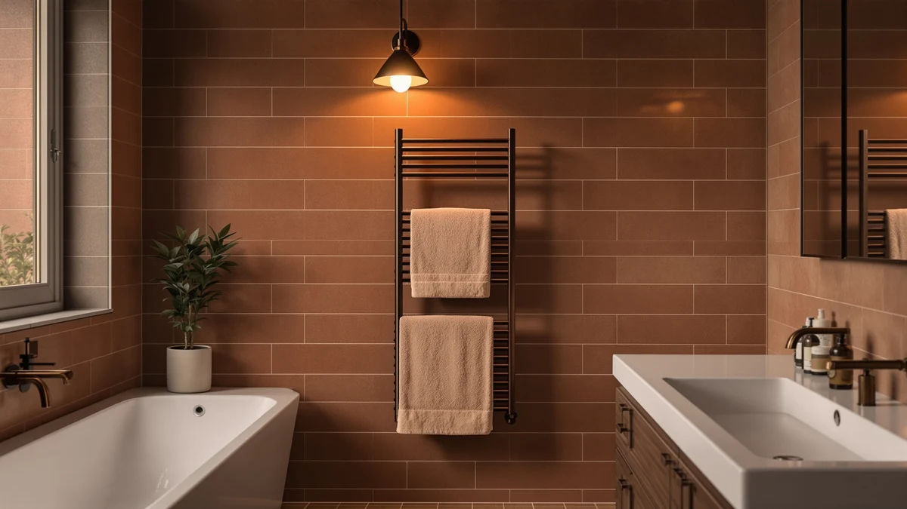

The Best Heated Towel Racks For small bathrooms (2026)
Prices and picks verified as of September 2026. Independent, reader-supported reviews.


Quick Answer
The best heated towel racks for small bathrooms trade floor space for a compact cabinet or a slim wall bar. After comparing seven stainless steel models on capacity, footprint, and price, the StateRiver Towel Warmer Cabinet 8L is our top pick: its 8-liter drawer holds a full-size towel and sits on a shelf instead of eating up wall or floor space. Want the same capacity for less? The Wuissvnb 8L saves you $14, and if a wall bar suits your layout better, the Poloma turns a warmer into a drying rack too.
Our pick: StateRiver Towel Warmer Cabinet 8L — $89.99 Check Price on Amazon
Bottom line: our top pick is the StateRiver Towel Warmer Cabinet at $89.99. The best budget option is the homfan Towel Warmers for Bathrooms at $50.53.
Things to Know Before You Buy
- Two formats fit small bathrooms. Enclosed cabinet warmers (StateRiver, VEVOR, AAOBOSI, Wuissvnb, VERYTOP, homfan) sit on a shelf or counter and warm a rolled towel from every side. The wall-mounted Poloma bar frees the counter entirely but needs 37.5 inches of clear wall instead.
- Capacity ranges from 5 to 35 liters. The 5-liter VEVOR and VERYTOP hold one towel comfortably, the 8-liter StateRiver and Wuissvnb fit a full bath sheet, and the 35-liter AAOBOSI and homfan can handle robes and bedding as well as towels.
- Measure your shelf before you buy. A bigger drawer means a deeper footprint. The 35-liter cabinets need meaningfully more counter or closet depth than the 5-liter models, so a true powder room does better with the smaller units.
- Price doesn't track capacity here. Our $53.19 homfan is both the cheapest and one of the roomiest cabinets, while the $89.99 StateRiver costs the most among the 8-liter options. The $159.99 Poloma bar costs more than double any cabinet because it's a different format, not just a bigger one.
- Plan for an outlet. Every model here is electric and stainless steel. None of them dries a soaking-wet towel quickly, so treat a warmer as a way to make a fresh towel hot, not a substitute for a dryer.
The best heated towel racks for small bathrooms have to solve two problems at once: warming a towel and not eating the only floor space you have. A powder room or apartment bathroom rules out the tall freestanding ladder racks that dominate most towel warmer roundups, so what's left are compact cabinet warmers that tuck onto a shelf and slim wall-mounted bars that use vertical space instead of horizontal. We compared seven stainless steel models across both formats, cabinet drawers as small as 5 liters and the 37.5-inch Poloma wall bar, to find which ones actually fit.
For most small bathrooms, the StateRiver Towel Warmer Cabinet 8L ($89.99) is the pick. Its 8-liter drawer swallows a full bath sheet, the stainless steel shell stays cool enough to touch while it runs, and the whole unit takes up less counter space than a stack of towels would on its own. If you want the same 8-liter capacity for less, the Wuissvnb model saves you $14, and if your bathroom has wall space to spare but no shelf, the four-bar Poloma turns a warmer into a drying rack too.
We read the published dimensions and capacity for every model, compared them against what a small bathroom can realistically spare, and cross-checked the owner reviews for patterns rather than star averages. Prices below are current as of July 2026 and, like most plug-in Amazon listings, can shift by a few dollars. For small bathrooms, the best heated towel racks for small bathrooms come down to fit as much as heat, and the StateRiver is the one that fits best.
Why You Should Trust Us
I'm Ilane Tall, and I write about bath and home products full time, with a focus on realistic fits for small bathrooms rather than showroom bathrooms with room to spare. I don't run a testing lab or cite anonymous experts. I compare published specs side by side, read the owner reviews in bulk for patterns, and I'm upfront about which pick only makes sense for certain layouts. Every model on this page is a stainless steel unit you can buy today, and every flaw below is one I'd tell a friend about before they spent the money.
This guide is reader-supported. If you buy through the links here, we may earn a commission, but it never changes which products we recommend or what we say about them. The cheapest pick on this page earns us the least, and it's still here because it's the right call for a lot of small bathrooms.
How We Picked
We started by cutting anything too big for a small bathroom. The tall freestanding ladder racks and wide multi-bar wall units that fill most towel warmer guides need a clear corner or several feet of wall, and most small bathrooms don't have either to spare. That left two formats: enclosed cabinet warmers you set on a shelf or counter, and a single slim wall bar for anyone with vertical space instead of shelf space.
We picked seven stainless steel models across those two formats: the 8-liter StateRiver and Wuissvnb, the 5-liter VEVOR and VERYTOP, the 35-liter AAOBOSI and homfan, and the wall-mounted Poloma bar. We weighed each one's capacity against the room it takes up, checked build quality across brands, and compared prices that range from $53.19 to $159.99.
How We Compared
We didn't run these seven through a lab. We compared them the way someone shopping for a small bathroom actually would, with more cross-checking. We lined up each cabinet's drawer capacity, from VEVOR's 5 liters up to the 35-liter AAOBOSI and homfan units, against the shelf or counter space a tight bathroom can spare. For the Poloma bar, we measured its 37.5-inch length against a typical small-bathroom wall run.
Then we read the owner reviews in bulk, past the star average, for how fast each unit heats, whether it stays warm through a full skincare routine, and what buyers say fails first. Where a model has a real weakness, we call it out in its write-up below. Prices are current as of July 2026 and, like other Amazon prices, can move.
Our Picks

StateRiver Towel Warmer Cabinet 8L
What we like
- 8-liter drawer fits a full bath sheet or two hand towels
- Stainless steel shell stays cool to the touch while running
- Compact enough for a shelf, counter, or closet floor
Flaws but not dealbreakers
- Costs more than every cabinet warmer here except the wall-mounted Poloma
- Door needs a few inches of clearance to swing open
| Material | Stainless steel |
| Size | — |
The StateRiver earns our top pick because it solves the small-bathroom problem better than anything else here: it warms a full-size towel without asking for floor space or wall space. The 8-liter drawer is deep enough for one large bath sheet or two hand towels rolled side by side, and the stainless steel cabinet sits flush enough to fit on a bathroom counter, a closet shelf, or a corner of a vanity. The outer shell stays cool enough to touch while the unit runs, which matters in a bathroom where counter space doubles as a place to set a toothbrush cup.
At $89.99, it costs more than every other cabinet warmer in this lineup except the wall-mounted Poloma, and the Wuissvnb 8L model below matches its capacity for $14 less. What you get for the difference is a tighter build and a door that seals more consistently, which owners report as steadier heat retention after the cycle ends. If you specifically want the roomiest drawer a compact cabinet warmer can offer and don't mind paying for it, this is the one to buy. If $14 matters more than the brand name, skip to our budget pick instead.

VEVOR Hot Towel Warmer 5L
What we like
- 5-liter drawer holds one full-size towel or two hand towels
- Smaller footprint than the 8-liter cabinets
- $30 cheaper than our top pick
Flaws but not dealbreakers
- Won't warm two full-size towels at the same heat
- Doesn't fit an oversized bath sheet folded whole
| Material | Stainless steel |
| Size | 5L |
The VEVOR is the runner-up because it gets most of what makes the StateRiver good, at $30 less. Its 5-liter drawer is smaller, but it's still large enough for one full-size towel or a couple of hand towels, and the stainless steel body takes up even less counter space than our top pick. For a single person or a small apartment bathroom where every square inch of shelf counts, the smaller footprint is a real advantage, not just a lower price.
The tradeoff shows up if you regularly warm towels for two people at once. A 5-liter drawer holds one towel comfortably; asking it to warm two at the same time means neither comes out as hot. It also won't accommodate an oversized bath sheet folded to full size, so measure your towels before you buy. For most small bathrooms used by one or two people who don't mind warming towels separately, the VEVOR's lower price makes it hard to pass up.

AAOBOSI Towel Warmer 4 in
What we like
- 35-liter drawer holds several towels, a robe, or bedding at once
- Multi-function cabinet rather than a single heat setting
- Priced close to the smaller 5-liter models
Flaws but not dealbreakers
- Needs more shelf or floor depth than the 5- and 8-liter cabinets
- Overkill if you only need one towel warm before a shower
| Material | Stainless steel |
| Size | 35L |
The AAOBOSI is the one to pick if you want more from your towel warmer than just heat. Its drawer holds a 35-liter capacity, well beyond the 5- to 8-liter range of the cabinet warmers above, so it can hold several towels, a robe, or bedding at once. The stainless steel cabinet packs in more than a single heat setting, which is where the "4 in" in its name comes from, and it's priced at $55.99, closer to the smaller-capacity VEVOR than to the larger StateRiver.
That extra capacity comes with a larger footprint. A 35-liter cabinet needs meaningfully more shelf or floor depth than a 5- or 8-liter drawer, so it suits a small bathroom with a spare closet or a wider vanity more than a true powder room. If your household warms towels, robes, and blankets together rather than one towel at a time, the AAOBOSI's extra room justifies the extra depth it asks for. If you just need one towel warm before a shower, a smaller cabinet does the job with less bulk.

Hot towel warmer 8L Towel
What we like
- Matches the StateRiver's 8-liter capacity
- Stainless steel construction
- $14 cheaper than the 8-liter StateRiver
Flaws but not dealbreakers
- Costs more than the smaller-capacity VEVOR and homfan models
- Less established brand than StateRiver or VEVOR
| Material | Stainless steel |
| Size | — |
The Wuissvnb is our budget pick because it matches the StateRiver's 8-liter capacity for $14 less. You get the same roomy drawer, deep enough for a full bath sheet, in the same stainless steel construction, without paying a premium for the more established brand name. For anyone who specifically wants that larger 8-liter capacity but doesn't want to pay StateRiver's price for it, this is the straightforward swap.
It isn't the cheapest model in this roundup. The 5-liter VEVOR and the 35-liter homfan both cost less, but neither matches its 8-liter capacity at that size point, so this is the budget option within its own capacity class rather than the cheapest option overall. If 8 liters is the capacity you've decided you need, the Wuissvnb gets you there without paying for the StateRiver name. If you're flexible on size, weigh it against the smaller, cheaper options here first.

VERYTOP Towel Warmer 5L-White 2-in-1
What we like
- Split-chamber design warms two towels at once
- Stainless steel cabinet in a lighter white finish
- Compact 5-liter footprint
Flaws but not dealbreakers
- $10 more than the similarly sized VEVOR
- No larger overall capacity than a single-chamber 5-liter cabinet
| Material | Stainless steel |
| Size | 5L |
The VERYTOP earns its spot for its 2-in-1 design, which splits its 5-liter capacity so it can warm two smaller towels or accessories at once instead of one large towel. That's useful in a two-person household where both people want a warm towel around the same time, something the single-chamber VEVOR and StateRiver can't do as cleanly. The stainless steel cabinet comes in white, which reads lighter and less industrial than the brushed steel finish on most of the other picks here.
At $69.99, it costs $10 more than the similarly sized VEVOR, and you're paying for the split-chamber design rather than any extra overall capacity. If you're warming towels for one person, the VEVOR does the same job for less. If two people share the bathroom and want their towels warm at the same time without waiting for a single chamber to cycle, the VERYTOP's 2-in-1 layout is worth the extra $10.

homfan Towel Warmers for Bathrooms
What we like
- Lowest price in this roundup at $53.19
- 35-liter capacity matches the larger AAOBOSI cabinet
- Folds down to a smaller footprint when not in use
Flaws but not dealbreakers
- Newer, less established brand than StateRiver or VEVOR
- Folding mechanism adds a moving part a fixed cabinet doesn't have
| Material | Stainless steel |
| Size | E2512 35L - Foldable |
The homfan is the lowest-priced model in this lineup at $53.19, and it still offers a 35-liter capacity that matches the larger AAOBOSI cabinet. What sets it apart is the foldable design: when it's not in use, the unit collapses down to a smaller footprint, which matters if your small bathroom's counter or shelf does double duty for other things during the day.
The tradeoff for that price and that fold-flat convenience is a newer, less established brand than StateRiver or VEVOR, and a folding mechanism that adds a moving part a fixed cabinet doesn't have. Owners who value the lowest price and the ability to fold the unit away report it holds up fine with normal use. If budget is the deciding factor and you like the idea of tucking it away between uses, the homfan is the pick. If you want proven brand longevity, StateRiver or VEVOR are the safer bet.

Paraheeter Towel Warmer Towel Warmer
What we like
- Four heated bars double as a real drying rack
- Frees up counter and shelf space entirely
- 37.5-inch vertical rack fits a narrow wall run
Flaws but not dealbreakers
- Costs more than double our top pick
- Needs clear wall space and a nearby outlet
- Heats more slowly than an enclosed cabinet
| Material | Stainless steel |
| Size | 4bars-37.5"(L) x 11.9"(W)-VERTICAL |
The Poloma is the only wall-mounted bar in this lineup, and it's for small bathrooms with plenty of open wall but no shelf space to spare. Instead of an enclosed drawer, it's a vertical rack with four heated bars spanning 37.5 inches tall and 11.9 inches wide, so towels drape over the bars rather than rolling into a cabinet. That design doubles as an actual drying rack between uses, which none of the cabinet warmers above can do.
At $159.99, it costs more than double our top pick, and it needs a clear stretch of wall and a nearby outlet that not every small bathroom has to give. It also heats more slowly than a cabinet warmer, since the bars warm a towel from one side rather than surrounding it. If your counter and shelves are already full but you have wall space to spare, the Poloma solves a problem the cabinet warmers can't. If you're tight on both wall and counter space, one of the cabinet picks above will serve you better and cost less.
Quick Comparison
| Product | Material | Price | Rating | Best for | Get it |
|---|---|---|---|---|---|
| StateRiver Towel Warmer Cabinet 8L | Stainless steel | $89.99 | 4 | Biggest 8L cabinet capacity | View on Amazon → |
| VEVOR Hot Towel Warmer 5L | Stainless steel | $59.90 | 4 | Best value near the top pick | View on Amazon → |
| AAOBOSI Towel Warmer 4 in | Stainless steel | $55.99 | 4 | Multi-function 35L cabinet | View on Amazon → |
| Hot towel warmer 8L Towel | Stainless steel | $75.99 | 4 | Budget 8L cabinet | View on Amazon → |
| VERYTOP Towel Warmer 5L-White 2-in-1 | Stainless steel | $69.99 | 4 | Two-towel 2-in-1 warming | View on Amazon → |
| homfan Towel Warmers for Bathrooms | Stainless steel | $53.19 | 4 | Foldable, lowest price | View on Amazon → |
| Paraheeter Towel Warmer Towel Warmer | Stainless steel | $159.99 | 4 | Wall-mounted bar rack | View on Amazon → |
Will a cabinet-style towel warmer actually fit in a small bathroom?
Yes, if you pick the right capacity.
Is a wall-mounted bar better than a cabinet warmer for a small bathroom?
It depends on what space you have to spare.
The Competition
We left out the freestanding ladder-style warmers that show up in most general towel warmer roundups. They look good in a spacious primary bathroom, but they need a clear few feet of floor that most small bathrooms don't have, so none of them made this list.
We also passed on hardwired hydronic warmers, the kind plumbed into a home's hot-water line. They run efficiently once installed, but the installation itself is a renovation-level job that doesn't make sense for a small rented bathroom or an apartment, where a plug-in cabinet or bar you can take with you is the more practical choice for a small bathroom.
Within our own lineup, the AAOBOSI and homfan units both offer a 35-liter drawer, well beyond what most small bathrooms need from a single towel warmer, so they're here for anyone who specifically wants that extra room rather than as a default pick. And the Poloma, while the only bar-style rack on this list, costs more than double our top pick, a fair trade only if you have wall space and no shelf to spare.